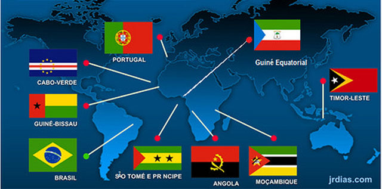

Seja bem-vindo ao site Países que falam a língua Portuguesa
"O português é uma das dez línguas mais faladas no mundo, estando presente em territórios na África, na América, na Europa e na Ásia. Surgiu do latim vulgar, tendo influência de outros dialetos da região onde se desenvolveu. É falado em nove países e em uma região na China."
Atrações Principais
- A língua portuguesa formou-se como língua específica, na Europa, pela diferenciação que o latim sofreu na Península Ibérica durante o processo de contatos entre povos e línguas que se deram a partir da chegada dos romanos no século II a.C., por ocasião da segunda Guerra Púnica, no ano de 218 a.C(1). Na Península Ibérica o latim entrou em contato com línguas já ali existentes. Depois houve o contato do latim já transformado com as línguas germânicas, no período de presença desses povos na península (de 409 a 711 d.C).
- O português europeu, português de Portugal, português lusitano, ou português continental é a designação dada ao original linguístico da língua portuguesa falada em Portugal e pelos emigrantes portugueses espalhados pelo mundo, englobando os seus dialectos regionais, vocabulário, gramática e ortografia.
Países que falam português
